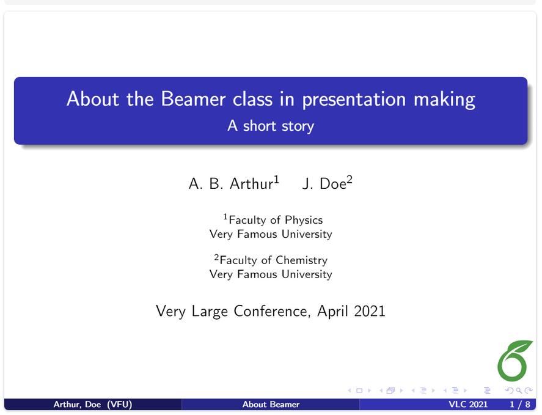
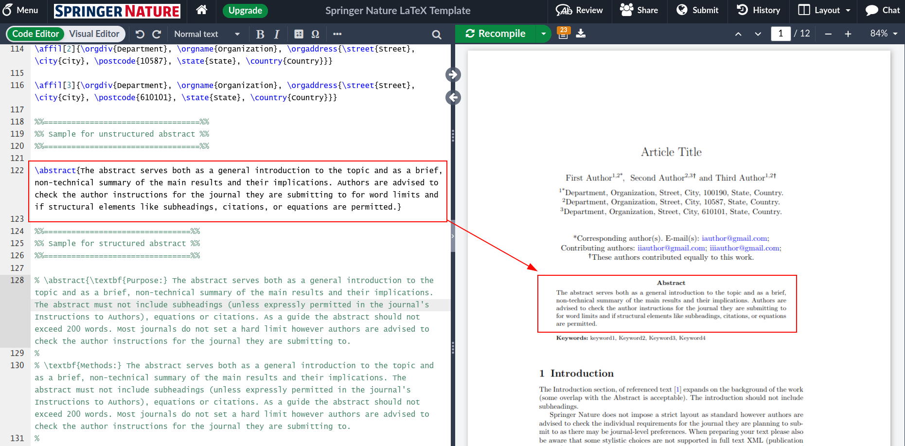
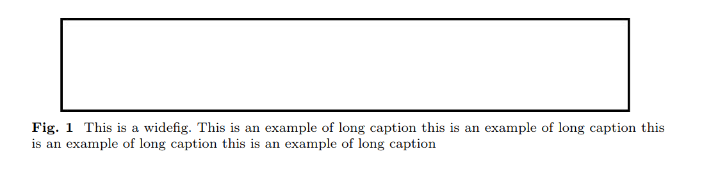
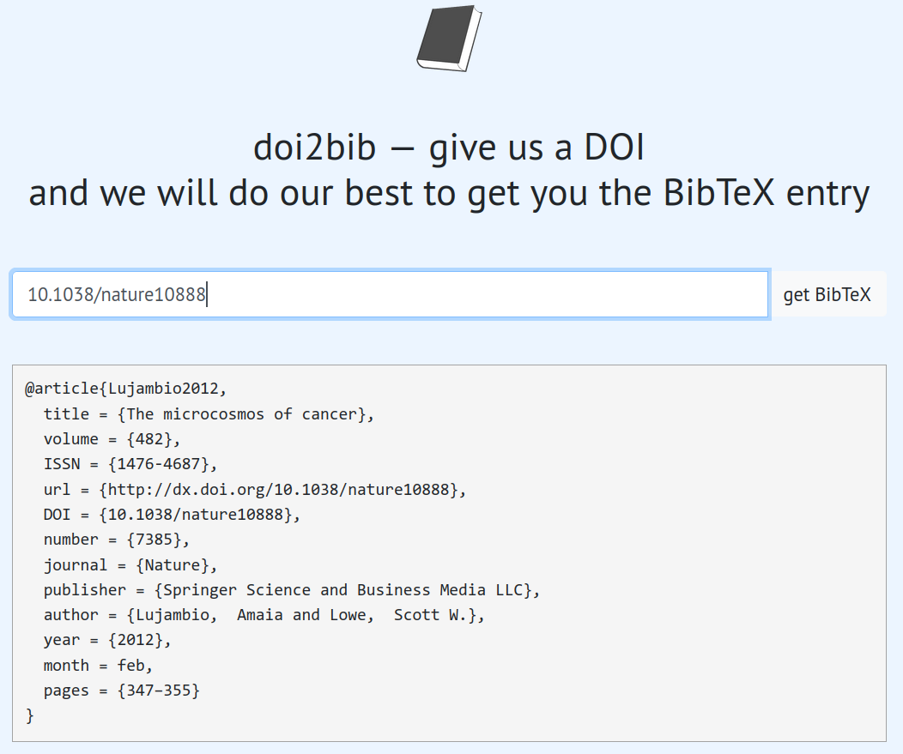
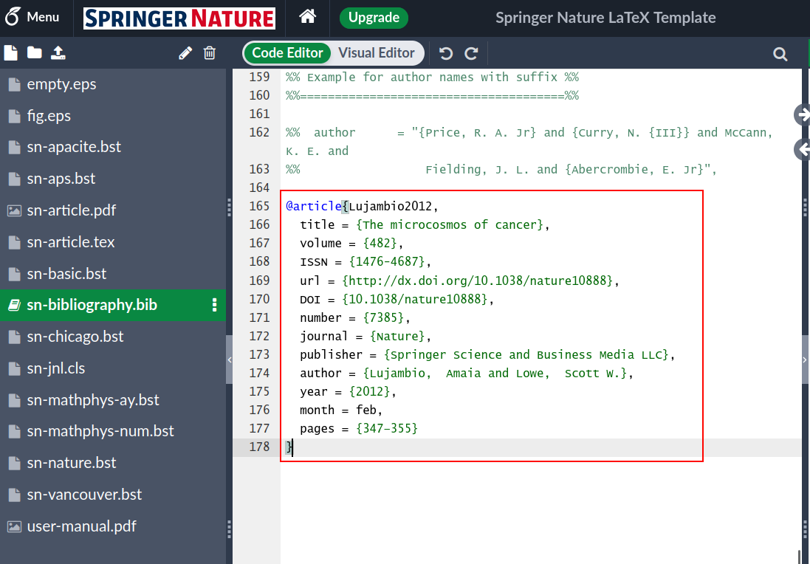
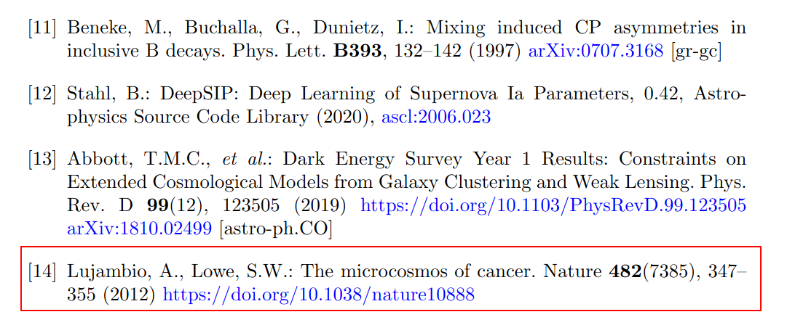

Compiling LaTeX content
LaTeX content needs compiling so if you’d like to compile files in your own computer you need to install LaTeX software on your own computer.
- For Windows, you need to install MiKTeX
- For Mac, you need to install MacTeX
- For Linux, you need to install pdflatex
After installation, you need to install required LaTeX packages. Long story short, installing and using LaTeX locally in your own computer is a hassle.
Overleaf
Overleaf provides an online environment where LaTeX and all necessary packages installed so you don’t need to install anything.
In order to register for an account, please head over to Registration page at Overleaf
Creating different document types in the Overleaf environment
The Overleaf platform can be used to create various types of documents such as articles, theses, presentations, posters, CV/Resume. For this purpose, a wide variety of ready-made templates can be found on the Overleaf site. You can visit the “Templates” link to search and try different types of templates.
Let’s create examples for the following document types respectively.
- CV
- Poster
- Presentation (Beamer)
- Article
- Thesis (with YTÜ Template)
Preparing a CV
After clicking the Resume/CV templates link, you can select a sample CV template, fill it with your own information, compile it, and create a PDF CV. Click here for the AltaCV template.
Preparing a Poster
With Poster templates, you can prepare PDF documents in poster size, in vertical or horizontal format.
Preparing a presentation (with Beamer)
Beamer is a powerful and flexible LaTeX library for creating great-looking presentations. The basic steps to make a Beamer slideshow are: creating a title page, adding a logo, emphasizing important points, creating a table of contents, and adding effects to the slideshow.
Below is a minimal example of a beamer presentation:
\documentclass{beamer}
%Information to be included in the title page:
\title{Sample title}
\author{Anonymous}
\institute{Overleaf}
\date{2021}
\begin{document}
\frame{\titlepage}
\begin{frame}
\frametitle{Sample frame title}
This is some text in the first frame. This is some text in the first frame. This is some text in the first frame.
\end{frame}
\end{document}Compiling this latex code will create the following presentation file containing two slides:

Beamer: presentation title slide
Information such as title, subtitle, author name, institution name, conference name, and logo can be added to the title slide
\title[About Beamer] %optional
{About the Beamer class in presentation making}
\subtitle{A short story}
\author[Arthur, Doe] % (optional, for multiple authors)
{A.~B.~Arthur\inst{1} \and J.~Doe\inst{2}}
\institute[VFU] % (optional)
{
\inst{1}%
Faculty of Physics\\
Very Famous University
\and
\inst{2}%
Faculty of Chemistry\\
Very Famous University
}
\date[VLC 2021] % (optional)
{Very Large Conference, April 2021}
\logo{\includegraphics[height=1cm]{overleaf-logo}}The output will be obtained as follows:

Beamer: marking important words and sentences
You can mark parts of text
\begin{frame}
\frametitle{Sample frame title}
In this slide, some important text will be
\alert{highlighted} because it's important.
Please, don't abuse it.
\begin{block}{Remark}
Sample text
\end{block}
\begin{alertblock}{Important theorem}
Sample text in red box
\end{alertblock}
\begin{examples}
Sample text in green box. The title of the block is ``Examples".
\end{examples}
\end{frame}The output will look like this:

Beamer: themes
You can see a list of beamer themes on the Overleaf beamer page.
Select one of the presentation templates prepared with Beamer from the Overleaf Templates page, modify it, compile it, and prepare a PDF presentation file.
Writing Articles in Overleaf
When examining the academic journal page in Overleaf templates, you’ll see that official templates of many different journals are shared on Overleaf. Writing articles using the templates shared by journals will make it possible to quickly ensure formal compliance. In fact, some journal templates have a “Submit to journal” link, so you can submit to the journal directly through Overleaf once you’ve completed writing your article.
Academic articles typically contain the following elements:
- Abstract and other sections
- Figures
- Tables
- Citations
Let’s examine all of these using the Springer/Nature article template.
The abstract information should be written inside \abstract{...}

When adding a figure, the following code is used:
\begin{figure}[h]
\centering
\includegraphics[width=0.9\textwidth]{fig.eps}
\caption{This is a widefig. This is an example of long caption this is an example of long caption this is an example of long caption this is an example of long caption}\label{fig1}
\end{figure}In this code, \textwidth determines how wide the figure will be relative to the text width. After uploading an image in PDF, EPS, PNG, or JPG format to Overleaf, you can add it to your article by writing its name inside the \includegraphics command. The text given in \caption will be added as a description below the figure, according to the journal’s template. Finally, you can add a label to your figure or table with the \label command, allowing you to refer to your figures or tables within the article text. The above code will appear as follows in PDF format:

The following code is used to add a table:
\begin{table}[h]
\caption{Caption text}\label{tab1}%
\begin{tabular}{@{}llll@{}}
\toprule
Column 1 & Column 2 & Column 3 & Column 4\\
\midrule
row 1 & data 1 & data 2 & data 3 \\
row 2 & data 4 & data 5\footnotemark[1] & data 6 \\
row 3 & data 7 & data 8 & data 9\footnotemark[2] \\
\botrule
\end{tabular}
\footnotetext{Source: This is an example of table footnote. This is an example of table footnote.}
\footnotetext[1]{Example for a first table footnote. This is an example of table footnote.}
\footnotetext[2]{Example for a second table footnote. This is an example of table footnote.}
\end{table}When preparing a table, cells should be separated by the & symbol, and row endings should be indicated with the \\ symbol. To use horizontal lines in the table, expressions such as \toprule, \botrule, or \midrule should be used. Footnotes can be used in the table to explain special cases, as shown in the code. The above code will appear as follows in PDF format according to the journal template:

Preparing tables manually in LaTeX is quite laborious, so use the Tables Generator site to convert your table from Excel or another environment to LaTeX format. When you copy and paste your table from Excel or another format to this site and click the “Generate” button, the necessary code for the table in LaTeX format will be generated.
Let’s demonstrate adding citations to LaTeX articles with an example. To cite the article titled “The microcosmos of cancer”, we need to obtain the information about this article in bibtex format. The best source for this is the DOI number. The DOI number for this article can be found as 10.1038/nature10888. When you go to the doi2bib site and enter the DOI number, you will be given information in bibtex format.

To add this information to the article template, you need to identify the file where the citations are located. In the template we are currently using, citations are in the sn-bibliography.bib file. We can click on this file to open it and paste the information we obtained from the doi2bib page (preferably) at the end of the file.

As you can see, at the beginning of the bib information, it says @article{Lujambio2012,, where “article” indicates that the citation belongs to an article. The expression that follows, “Lujambio2012”, is the “key” value of this study, which we need to use when we want to cite it in the article. This value can be changed by you; it’s usually created in the form of “first author surname + publication year”, but you can also name it yourself, such as “cosmos-article” if you prefer.
When we write the expression This sentence refers to "The microcosmos of cancer" article \cite{Lujambio2012}. in our article and compile it, you will see the following citation and reference updates:


Writing YTU Thesis with Overleaf
In this section, we will use the YTU Thesis LaTeX template with Overleaf.
First, review the documents on creating a document in Overleaf and then Uploading a project.
YTU Thesis Template
Please visit the Thesis Writing Rules page and then download the zip file under the “Latex-Thesis Template” heading.
After downloading, you should have a file named *YTU_Thesis_Latex_Template__08_05_2024.zip* in your folder.
Uploading YTU Thesis Template to Overleaf
Before uploading the YTU thesis template to Overleaf, you should register and log in to Overleaf. After logging in to Overleaf, click on “New Project” and then select “Project from Archive”.

Then you can drag and drop the zip file you just downloaded from the YTU website, or click on “Select a .zip file” and choose the zip file from your local folders.  When all these steps are completed, you should see the YTU Thesis template in Overleaf like this:
When all these steps are completed, you should see the YTU Thesis template in Overleaf like this:

The Power of LaTeX
Let’s see the power of LaTeX. In the main.tex file, update the following line:
\usepackage[tr, phd]{ytuthesis}
to:
\usepackage[eng, phd]{ytuthesis}
As soon as you save the document (Ctrl + s), the entire thesis document will be compiled and the language of the thesis will be English. Observe the changes in the right pane (compiled PDF file).
Document Structure
At the beginning of the main.tex file, you’ll see that the preamble part is quite short: (comment lines have been removed)
\documentclass[a4paper,12pt,oneside,openany]{book}
\usepackage[tr, phd]{ytuthesis}
\addbibresource{references.bib} Here, the ytuthesis.sty file, which is the YTU Thesis style file, is being used. This file contains YTU Thesis style rules (margins, font types, font sizes, line spacing, spaces after figures, etc.). Do not modify this file unless you know what you’re doing.
And the references.bib file contains the references. This is actually a plain text file, open it in Overleaf and observe its content and style.
And here’s the \begin{document} - \end{document} part:
\begin{document}
\input {frontPages.tex}
\input {thesisChapters/1-chapter.tex}
\input {thesisChapters/2-chapter.tex}
\input {thesisChapters/3-chapter.tex}
\input {thesisChapters/4-chapter.tex}
\newpage
\addcontentsline{toc}{chapter}{\bibName}
\singlespacing
\printbibliography[title={\bibName}]
\newpage\appendix
\input {thesisChapters/A-appendix.tex}
\ifnum\tmc=0
\newpage
\addcontentsline{toc}{chapter}{\cvpub}
\input {publications.tex}
\fi
\end{document}As you may recall, we said that LaTeX is like a programming language. Here, you can notice the \input command, which can be used to include external files, which is useful when working with large documents. Also, the \ifnum command checks the content of a variable (in this case tmc) and conditionally adds the publications.tex file to the thesis.
Variables
For small documents, it might be appropriate to work on a single main.tex file. However, for larger contents, keeping sections as separate files, collecting styles in a single file, and keeping variables in a separate file allows you to manage the writing process more easily.
In the case of the YTU thesis, the frontPages.tex file contains certain variables and we shouldn’t modify this file. However, the information.tex file contains variables related to the thesis and you need to update variables such as thesis title, advisor, etc. in this file.
If you want to update the thesis title, please open the information.tex file and update fields 1 and 2, then save the file (Ctrl + s).
Your Turn
Fill in the information in the information.tex file as much as possible and observe the PDF file generated as a result of compilation in the right panel as you save the file.
Then, try adding a figure, a table, and a citation to the 3rd chapter of the thesis (thesisChapters/3-chapter.tex).